Experimental results¶
To verify the effectiveness of the test patterns generated by this software a number of experiments have been carried out, the results of which are shown here. Broadly, these experiments are divided into two groups which demonstrate that:
The heuristic synthesis test pattern performs better than a naive test pattern which assumes filter linearity.
The generated test patterns produce more extreme signal levels than real pictures or noise signals in practice.
The software used to run these experiments can be found on GitHub. The source of this documentation page includes comments showing the exact command used to produce each of the plots shown.
Heuristic vs naive synthesis test patterns¶
The heuristic developed in Test pattern generation is designed to produce more extreme signal values after quantisation than test patterns which ignore non-linearities in VC-2. To verify this, the following experiment compares the result of passing both types of synthesis test pattern through a VC-2 encoder and decoder.
Method¶
The following procedure is carried out for each synthesis filter phase (i.e. for each test pattern):
Encode the pattern-under-test.
Quantise the transform coefficients produced in step 1.
Decode the quantised transform coefficients and record the signal value in the targeted part of the synthesis transform.
Repeat steps 2-3 for all quantisation indices which don’t quantise all transform coefficients to zero.
Quantisation is carried out using a single quantisation index for all picture slices and using the default quantisation matrix for the filter configuration used.
Results¶
The plot below shows the relative performance of the naive and heuristic test patterns across all arrays and filter phases, broken down by transform depth and wavelet. Each dot shows the relative performance of the test pattern for a particular filter phase.
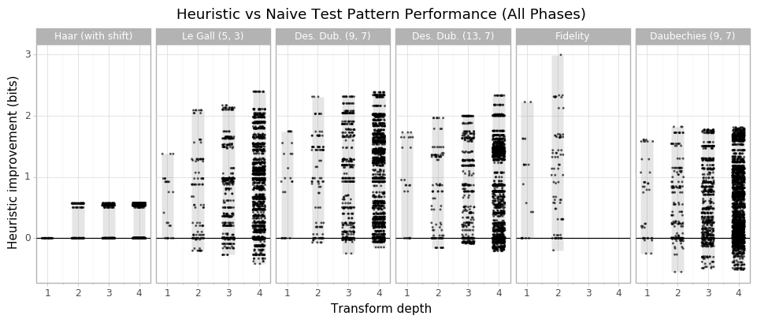In general, the heuristic test patterns produce signal levels at least one bit larger than the naive test patterns, only rarely producing lower signal levels. Occasional under-performance is to be expected since the heuristic is, well, a heuristic.
The figure above treats each filter phase independently. In practice, most VC-2 implementations will choose a number of bits for each array as a whole rather than using different numbers of bits for different phases. As the figure below illustrates, the signal ranges for a given array can vary substantially between filter phases:
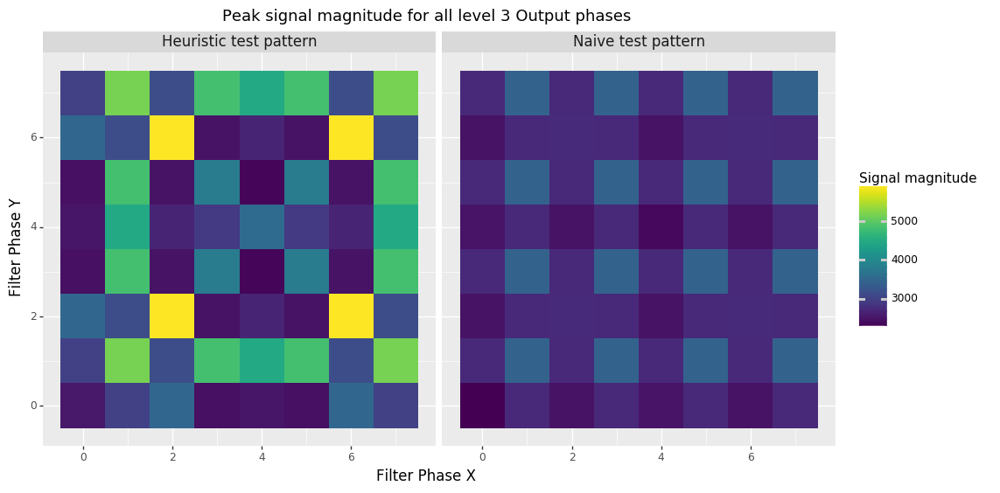Because of this, it may make more sense to present the effect the heuristic test patterns have on the worst-case signal levels within each array. The plot is redrawn below but this time each dot represents the relative improvement of going from the most extreme value produced by the naive filter to the most extreme value for the heuristic filter for any phase.
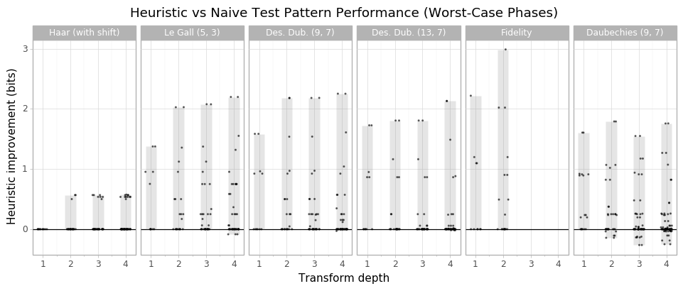Overall, this tells us that for some filter arrays the test patterns produce signal values one or more bits larger than the naive test patterns. Again, the heuristic occasionally produces lower signal levels than the naive test pattern though the effect is lessened when only worst-case phases are considered.
In summary we can conclude that the heuristic test patterns produce larger signal levels than the naive test patterns in most cases.
Comparison with natural images and noise¶
As noted in Related work, a common approach to picking signal widths in wavelet transforms is to pass images or noise through the filter and observe signal levels in practice. To measure the effectiveness of this approach, an instrumented VC-2 encoder/decoder was used to log the signal levels produced by noise signals, real pictures and the test patterns generated by this software.
The plots below result from 4-level symmetric transforms using the VC-2 default quantisation matrices.
Real pictures, 4:1 compression ratio¶
This first plot shows the peak signal levels produced by a collection of 48 natrual, 10-bit, luma-only, HD images, compressed at a ratio of 4:1, compared with those produced by the heuristic test patterns.
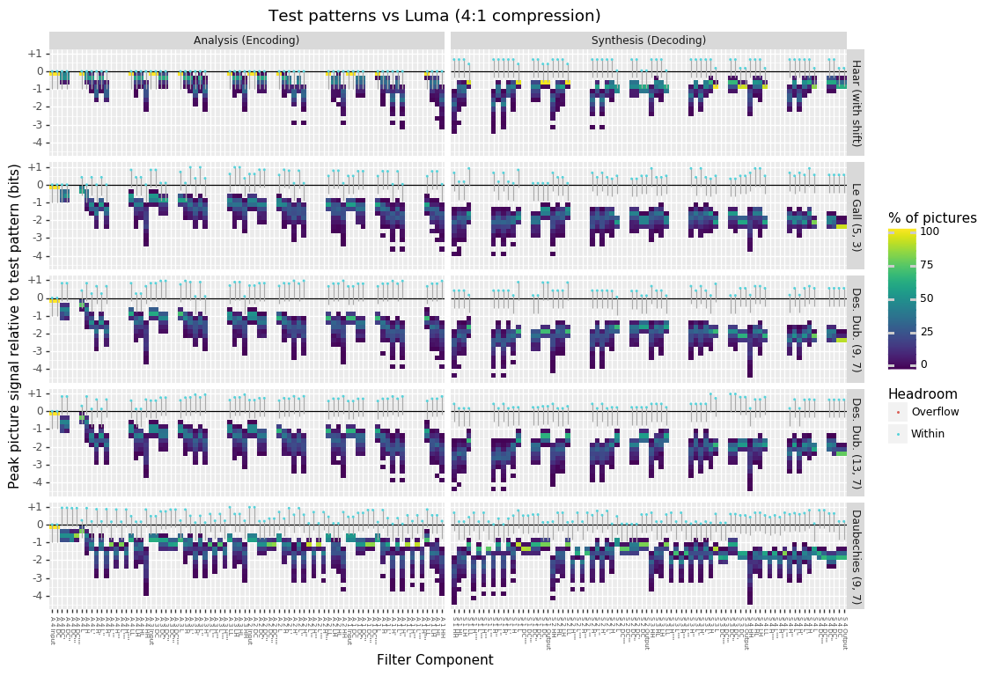The plot above is broken up into several subplots which show the results for different wavelet transform types.
Within a subplot, each column shows a histogram of the distribution of relative signal values. From this plot we can immediately see that no picture ever produces a signal level larger than the heuristic test patterns. In fact, in the majority of pictures, real pictures produce peak signal levels one or more bits lower than those produced by the test patterns. Some pictures produce peaks over four bits lower than the test patterns for certain filter arrays.
From this plot we can conclude that bit-width requirements are likely to be under-estimated by at least 1 bit for most wavelets if only real pictures are used to determine bit-widths.
Saturated noise, 4:1 compression ratio¶
The other common test source for chosing bit widths is noise. The plot below shows the peak signal levels achieved by 300 10-bit, HD, saturated, uniform random noise pictures, compressed at a 4:1 ratio.
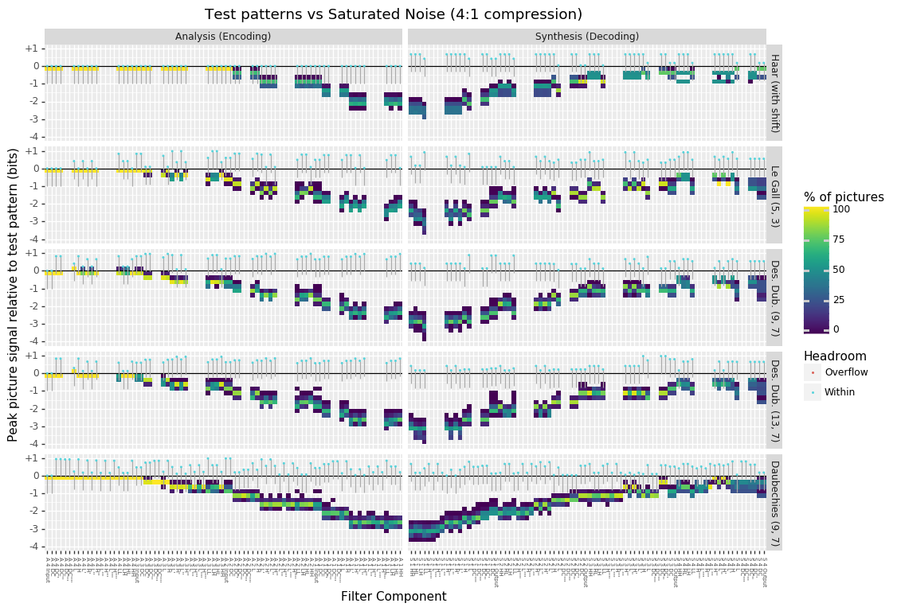This time, the peak signal levels of the noise signals more closely matches that of the test patterns for early synthesis filter arrays. Deeper within the transform, however, the test patterns begin to produce larger signal levels by as many as two bits or more at the deepest parts of the transforms.
Under the two Deslauriers Dubuc wavelets, however, some noise signals peak slightly above the test patterns in a small number of filter arrays. In practice, however, the bit widths required to support the test patterns are also sufficient for these peaks in this case. This is visualised by the ‘drawing pins’ in the plot.
The body of each ‘drawing pin’ shows the range of values which would be rounded up to the same number of bits as the test pattern. In this case, we can see that most of the noise overshoots are comfortably within this range. In the more ambiguous cases, the colour of the pin head indicates whether any picture actually exceeded the number of bits used by the test pattern. In this case all of the pins are cyan indicating the test patterns indicated the correct number of bits, even if the absolute signal range was a slight underestimate.
The main conclusions to be drawn from this graph is that the heuristic test patterns also produce significantly higher signal levels than noise signals. In particular, in deep parts of most transforms the signal levels are under-estimated by over two bits – a worse under-estimate than produced by real pictures.
Worst-case quantisation¶
Both of the plots above show pictures compressed by a typical 4:1 compression ratio. In practice, the most extreme signal levels are produced under larger quantisation levels – and indeed the test patterns use much larger quantisation levels.
The two plots below instead show the picture and noise signal levels at whatever quantisation index makes them largest – i.e. worst-case quantisation.
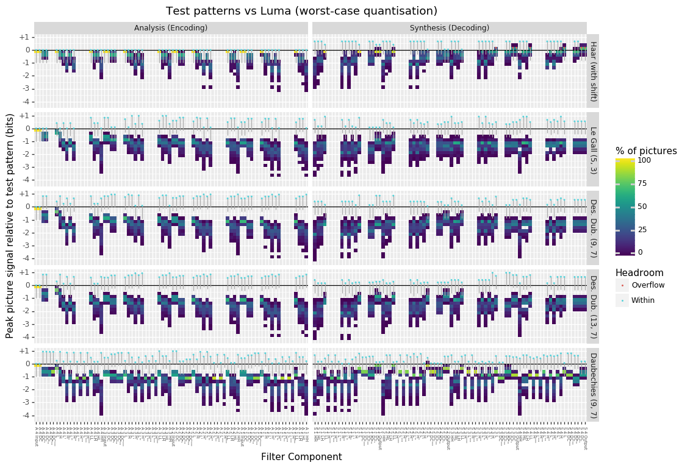 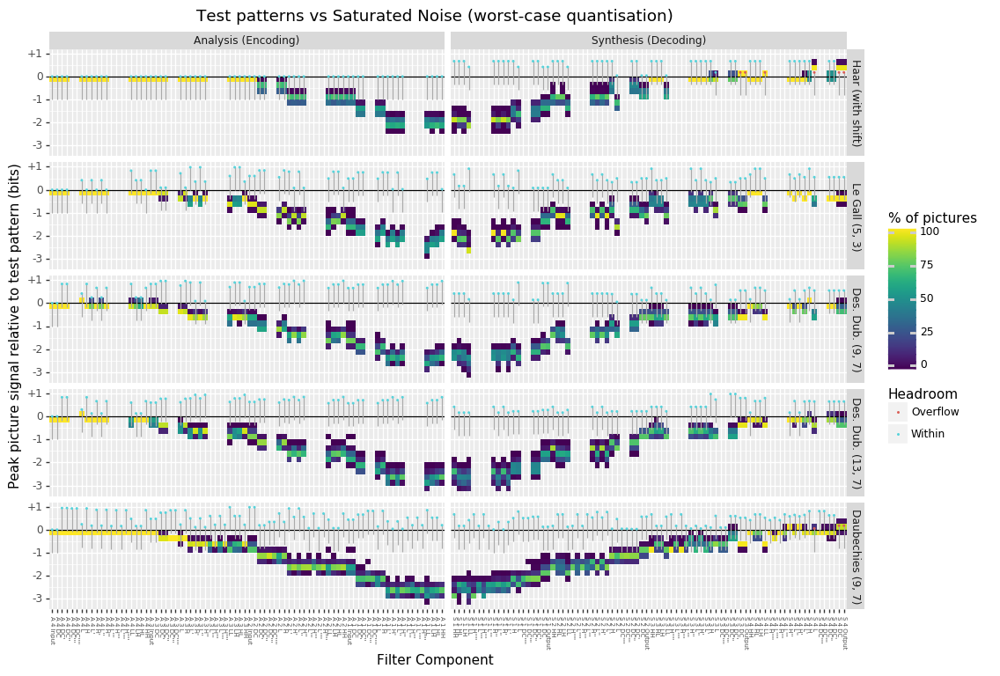In general the trends are essentially the same with both real pictures and noise being likely to under estimate signal levels, particularly deeper in the transform.
The most significant difference is that the Haar transform test patterns are out-performed by both real pictures and noise in the final stages of the synthesis filters. This shortcoming presents a possible motivation for using vc2-optimise-synthesis-test-patterns to optimise test patterns for the Haar transform.
Method¶
Experiments used the following input pictures:
- Real pictures (48 natural images)
YCbCr and RGB formats
8, 10, 12 and 16 bit depth
UHD and HD resolution scalings
For a total of 2304 picture components (48 pictures \(\times\) 6 picture components (Y, Cb and Cr; R, G and B) \(\times\) 4 bit depths \(\times\) 2 resolutions (UHD and HD).
- Noise signals (300 noise pictures)
Saturated and non-saturated uniform random (white) noise
8, 10, 12 and 16 bit depth
HD resolution only
For a total of 2400 (monochrome) noise pictures (300 noise samples \(\times\) 2 noise types \(\times\) 4 bit depths).
The following codec configurations were tested:
- Wavelet:
Haar (with shift)
Le Gall (5, 3)
Deslauriers-Dubuc (9, 7)
Deslauriers-Dubuc (13, 7)
Daubechies (9, 7)
Fidelity
- Transform depth
2 levels (symmetric)
4 levels (symmetric)
- Quantisation matrix
Default quantisation matrix used for the wavelet/depth chosen
- Quantisation index (applied globally to all picture slices)
All possible quantisation indices used
For a total of 768 codec configurations (6 wavelets \(\times\) 2 transform depths \(\times\) (approx) 64 quantisation indices). This total is approximate as the number of quantisation indices tested varies depending on the picture being encoded.
Each component (channel) of every test picture and noise plate is individually encoded (analysed), quantised and decoded (synthesised) using each configuration of the codec enumerated above. In each of these runs, the peak signal levels in each array in the encoder and decoder (see Terminology) are recorded.
In total approximately 3,612,672 picture component and codec configuration combinations were tested (768 configurations \(\times\) 2304 \(+\) 2400 picture components).
Detailed Results¶
Due to VC-2’s flexibility, the experiments carried out include a fairly large number of variables. Many of these variables have little impact on the general trends in the results. As a consequence, we begin by looking at specific examples which demonstrate general trends before exploring the effects of different codec configurations.
General trends¶
The plot below shows the worst-case signal levels in each array of a 4-level Le Gall (5, 3) transform acting on 10 bit pictures.
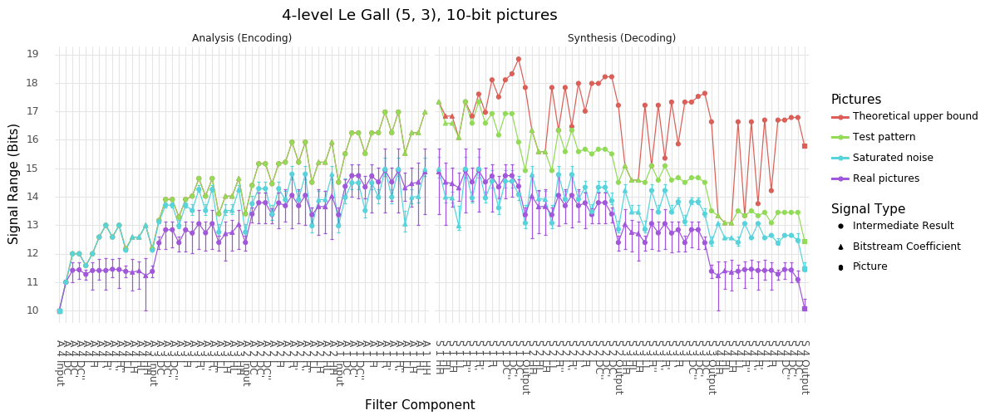The ‘Theoretical upper bound’ line gives the upper-bound computed according to affine arithmetic (see Computing signal bounds with Affine Arithmetic). The ‘Test pattern’ line shows the signal levels reached by the test patterns generated by this software (see Test pattern generation).
In the analysis filter, the test patterns almost exactly reach the theoretical upper bound. In the synthesis filter, however, quantisation causes the theoretical upper bounds to grow well beyond the level of the test patterns. In all codec configurations, the synthesis filter’s theoretical upper bounds appear to be significantly over-estimated (by several bits) compared with signal levels observed in practice.
The ‘Saturated noise’ and ‘Real pictures’ lines show the signal levels reached by saturated noise signals and real HD luma (Y) picture components respectively. The lines show the mean peak signal across all pictures while the error bars show the range. The results are shown for the quantisation index which achieves an overall 4:1 compression ratio typical of VC-2 applications.
Note
In these experiments, the encoder encodes the entire picture as a single picture slice using the lowest quantisation index which fits the required picture data. This is a simplification of real encoder behaviour necessary to keep the parameter space for these experiments under control.
A key result shown in this plot is that at every part of the analysis and synthesis filters, the test patterns produce signal levels at least as large as the pictures or noise. In many cases, the test patterns produce peak signal levels over 1 bit larger than the pictures and noise. This means that had these real pictures or noise been used to pick bit widths for a VC-2 implementation, these would have under-estimated the required number of bits.
A secondary observation is that the ability of random noise signals to find extreme signal levels reduces at deeper levels of the transform and also following quantisation. In fact, this effect is so pronounced that at the deepest part of the transform, real pictures actually produce more extreme signal levels than the noise. This may be explained by these parts of the transform being dominated by low-spatial-frequency content which natural pictures are heavily skewed towards.
Effects of quantisation¶
The previous plot showed the signal levels reached when real pictures and noise are passed through a VC-2 codec using quantisation indices consistent with a typical 4:1 compression ratio. By design, the quantisation levels required to achieve this level of compression produce only small errors. At higher quantisation levels, larger errors are produced which can lead to more extreme signal values being produced from real picture and noise signals.
To illustrate the relative effects of atypical-quantisation levels, the plot below compares the signal levels produced for 4:1 compressed pictures and noise and ‘worst-case’ quantisations of those same pictures. The ‘worst-case’ values report the most extreme signal value produced at any quantisation index.
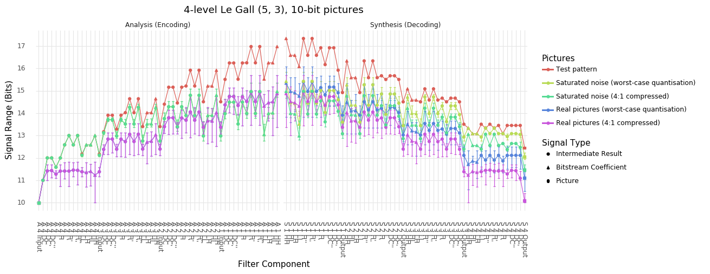As the plots show, worst-case quantisation produces consistently higher signal levels than those found under 4:1 compression. Nevertheless, these signal levels remain below the signal levels produced by the test patterns.
Once again, a 4-level Le Gall (5, 3) transform acting on 10 bit pictures is shown above but the pattern is found to be consistent across other configurations as is discussed in greater detail later.
Note
The ‘worst-case’ quantisation levels used in the plot above are much higher than those used under typical compression ratios. The boxplots below illustrate the distributions of quantisation indices which are used in practice.
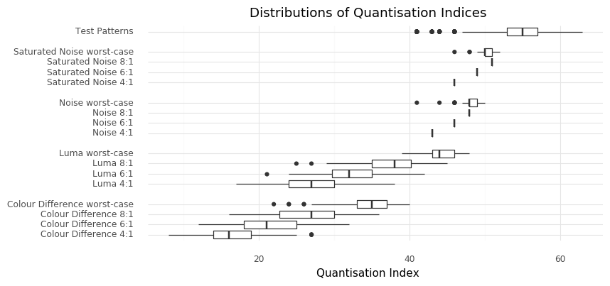The ‘Test patterns’ boxplot shows the distribution of quantisation indices used by the heuristic synthesis test patterns. The other box plots show the actual distributions of quantisation indices used to encode the test pictures and noise samples at various compression ratios.
The plots show that the quantisation levels used for real pictures at typical (i.e. 4:1) or larger (6:1 and 8:1) compression ratios are significantly lower than worst-case quantisation levels, and those levels used by the test patterns. Even in the case of noise signals, the quantisation levels used still fall short of these worst-case levels.
The plot specifically shows the quantisation indices used by a 4-level Le Gall (5, 3) transform for 10 bit input signals however the general trend is consistent accross configurations.
This result implies that even if encoders are deliberately configured to use very large quantisation levels, real pictures and noise signals still do not produce the signal levels produced by the heuristic test patterns.
Noise types¶
The plot below compares the signal levels achieved by non-saturated and saturated noise signals, shown for worst-case quantisation indices. Again, a 4-level Le Gall (5, 3) transform is shown acting on 10 bit inputs.
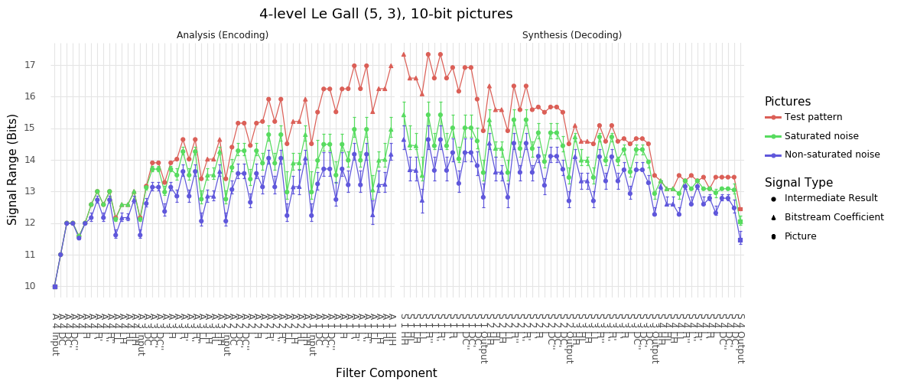As might be expected, saturated noise results in higher worst-case signal levels, a pattern found to be consistent across all arrays and all noise samples and codec configurations tested. This confirms that saturated noise makes a better test signal for finding extreme signal values than unsaturated noise.
Note
A singular exception to the rule that saturated noise produces larger signals than non-saturated noise was found in the experimental data. Specifically the final output stage of the 2-level Haar (with shift) synthesis transform, non-saturated noise produced worse-case signals around 0.2 bits larger than saturated noise. Due to the isolated incidence of this rule, It is assumed that this outcome is the product of random chance and that over a larger number of noise pictures, the rule would hold.
Picture components¶
The plot below compares the signal levels produced by different colour components of the real picture signals. Again, a 4-level Le Gall (5, 3) transform is shown acting on 10 bit inputs and 4:1 compression.
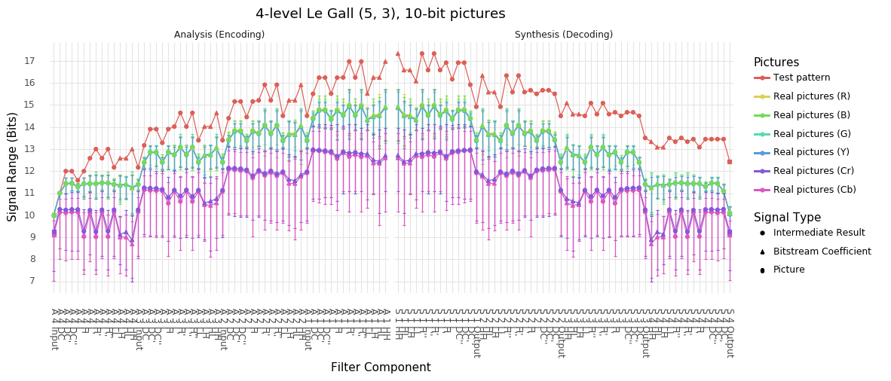As might be expected, the signal levels from the luma component (Y) in a YCbCr picture and the components of an RGB picture are extremely similar. Likewise, the colour difference signals (Cb and Cr) from a YCbCr picture show much lower signal ranges due to relatively low signal levels encountered in typical pictures. As a consequence, we only consider the luma component of real picture signals in these experiments.
Picture size¶
The plot below compares the signal levels produced by HD and UHD real picture signals. Again, a 4-level Le Gall (5, 3) transform is shown acting on 10 bit inputs and 4:1 compression.
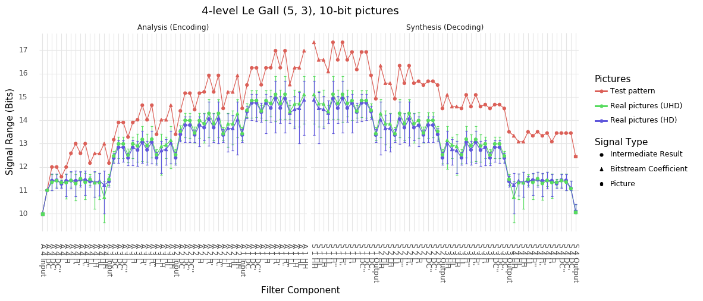The signal levels encountered at the different resolutions are broadly similar with UHD signals producing slightly larger signal levels deeper in the transform and slightly smaller signals nearer the start/end. Due to the similarity of the signals produced by the two picture sizes, only HD signals are shown in the other plots.
Bit Depth¶
The plot below compares the signal levels produced by different picture bit depths (on a relative scale). Again, a 4-level Le Gall (5, 3) transform is shown with 4:1 compression.
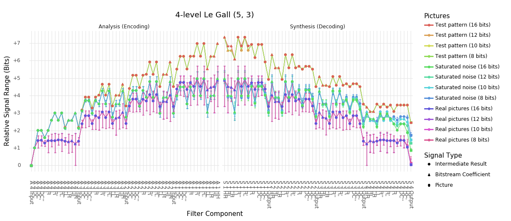As shown, the results are essentially indistinguishable at every bit width, though there are some occasional (small) differences which are assumed to be due to differences in where quantisation boundaries fall. Since the impact on bit widths on the overall trends in the results is extremely small, only 10 bit examples are shown.